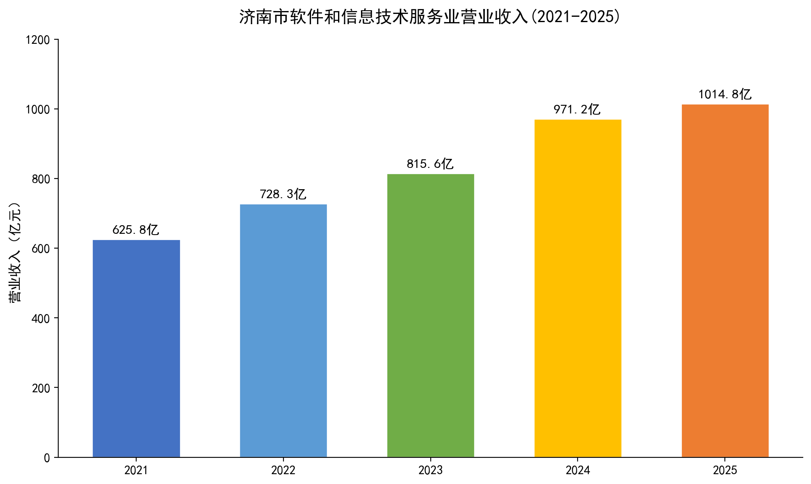
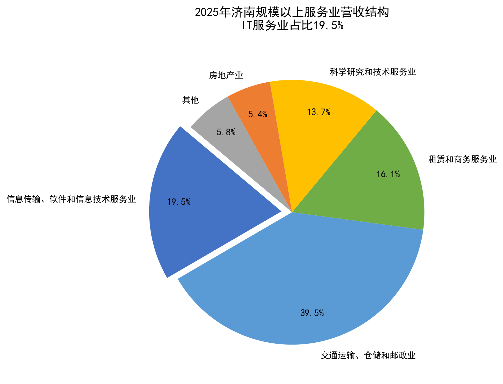
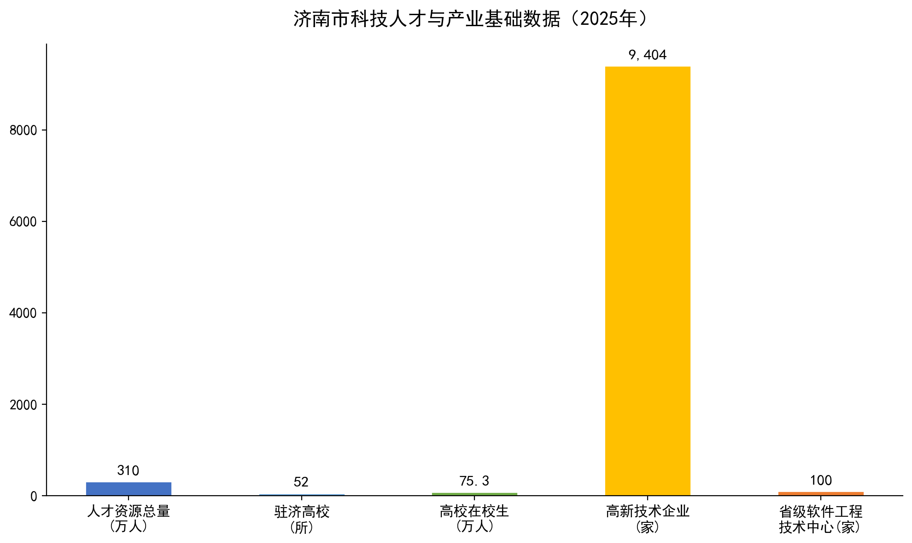
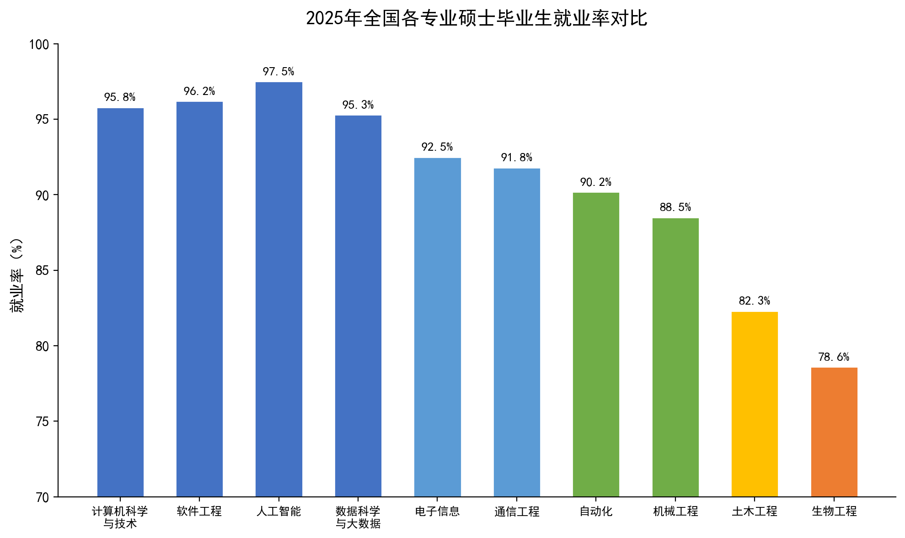
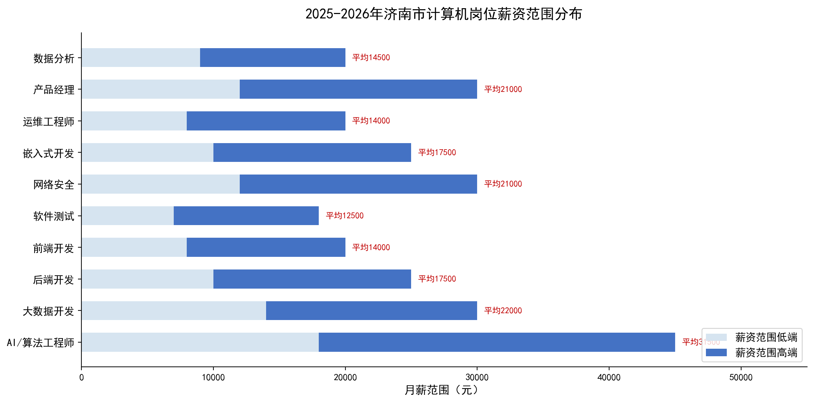
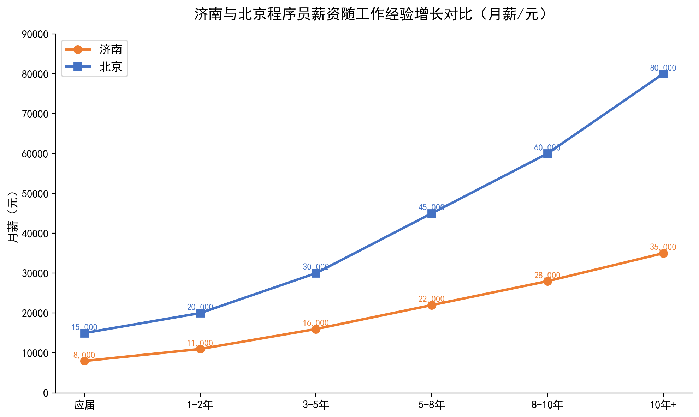
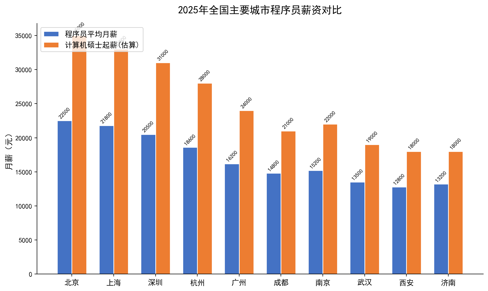
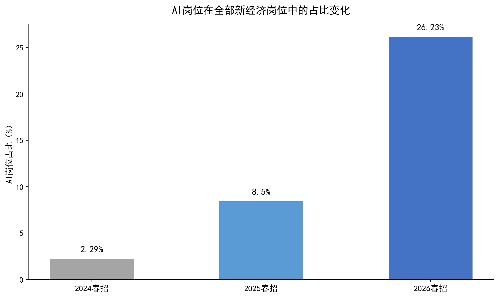

基于济南市统计局2025年统计公报、猎聘·BOSS直聘·职友集等主流招聘平台数据、 高校就业质量报告，多维度交叉验证，呈现最真实的济南IT就业市场全景。
综合官方统计与招聘平台数据，呈现济南IT就业市场的核心面貌
作为中国软件名城，济南IT产业规模持续扩大，AI产业迎来爆发式增长



在主要工科专业中，计算机类硕士就业率长期位居前三

从岗位、经验、学历三个维度深度分析济南IT人才薪资结构

| 岗位方向 | 月薪范围（元） | 平均月薪（元） | 年薪范围（万） | 需求趋势 |
|---|---|---|---|---|
| AI/算法工程师 | 18,000-45,000 | 31,500 | 38-54 | 🔥 爆发 |
| 大数据开发 | 14,000-30,000 | 22,000 | 26-36 | ▲ 增长 |
| 后端开发 | 10,000-25,000 | 17,500 | 21-30 | ▲ 稳定 |
| 网络安全 | 12,000-30,000 | 21,000 | 25-36 | ▲ 增长 |
| 嵌入式开发 | 10,000-25,000 | 17,500 | 21-30 | ▲ 增长 |
| 产品经理 | 12,000-30,000 | 21,000 | 25-36 | ▲ 稳定 |
| 前端开发 | 8,000-20,000 | 14,000 | 17-24 | — 持平 |
| 数据分析 | 9,000-20,000 | 14,500 | 17-24 | ▲ 增长 |
| 软件测试 | 7,000-18,000 | 12,500 | 15-22 | — 持平 |
| 运维工程师 | 8,000-20,000 | 14,000 | 17-24 | — 持平 |

计算机硕士就业不止"写代码"一条路
占比约55%
算法工程师、后端开发、大数据开发、嵌入式开发、网络安全
占比约15%
AI产品经理（增幅369%）、解决方案架构师、技术支持
占比约20%
金融科技、智能汽车、医疗信息化、工业互联网
占比约10%
公务员（计算机岗逐年增加）、事业单位信息化、国企IT、高校科研
济南重点布局的新兴产业为计算机硕士提供广阔的就业空间
综合考虑薪资水平与生活成本，济南的实际购买力在主要城市中表现突出

| 城市 | 程序员平均月薪 | 硕士起薪 | 平均房价（元/㎡） | 薪资房价比 |
|---|---|---|---|---|
| 北京 | 22,500 | 35,000 | 65,000 | 0.35 |
| 上海 | 21,800 | 33,000 | 60,000 | 0.36 |
| 深圳 | 20,500 | 31,000 | 55,000 | 0.37 |
| 杭州 | 18,600 | 28,000 | 35,000 | 0.53 |
| 广州 | 16,200 | 24,000 | 35,000 | 0.46 |
| 南京 | 15,200 | 22,000 | 30,000 | 0.51 |
| 成都 | 14,800 | 21,000 | 18,000 | 0.82 |
| 武汉 | 13,500 | 19,000 | 17,000 | 0.79 |
| 济南 | 13,200 | 18,000 | 15,000 | 0.88 |
| 西安 | 12,800 | 18,000 | 15,000 | 0.85 |
薪资房价比 = 程序员月薪 ÷ 房价均价。比值越高，相对购房能力越强。
AI岗位爆发式增长，既是挑战更是机遇

普通程序员供过于求，顶尖技术人才一将难求
全国超千所高校开设CS专业，每年毕业生超百万人。AI编程工具渗透率已超过40%，仅凭"会写代码"就能找到好工作的时代已经过去。
AI科学家月薪突破12.7万，算法研究员月薪约7万。大模型算法人才供需比仅0.3——每3个岗位争夺1名求职者，企业抢人难度极大。
济南是计算机类硕士性价比极高的就业选择
济南薪资在二线城市领先，生活成本仅一线城市约1/4，AI产业增速超32%，齐鲁软件园全国四强。对于追求高性价比生活质量的计算机硕士，济南是一个值得认真考虑的选择。
数据来源：济南市统计局《2025年统计公报》· 猎聘·BOSS直聘·职友集 · 齐鲁软件园官方数据 · 高校就业质量报告
报告生成于 2026年6月 · 图表为基于真实数据的原创可视化